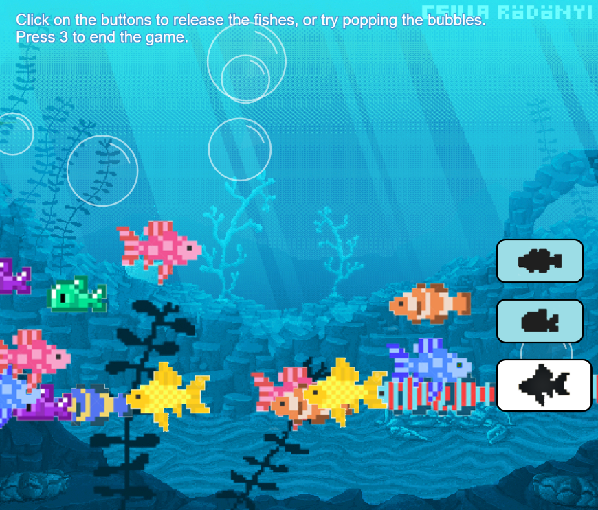

Past Projects and Coding
Arrays Practice Sketch
This is one of the use of arrays where I created 2 different 2D arrays, one with shape and one with letters - to map those data into a final sketch. For this assignment I chose to do the Pusheen cat. It normally comes in gray color, but I use the array feature to duplicate into another orange version of it. Both of them look really adorable and resemble the main figure a lot, so I really like it.
See the sketch
See code
Scene Pratice
This assignment is about making a series of scene that included the use of sound library and scene manager. I would say that it is very hard for me at first to learn how to combine the two js files at the same time in order to make the scenes work. There were so many new things for me to learn at this point of the semester, so I'm very glad that the product turned out looking well enough.
See the sketch
See scene code
See sketch code

Boba time!
Here I made a clock based on the time I go to get my boba drink everyday (4:30 pm). The real time's seconds will be described on how the milktea level inside the cup reduced, and the amount of minutes will also be the amount of boba appearing on screen. The placement of the sun and the moon will be changed according to the hour of the day.
Let's take a look at the clock!
See code

Fishtank Simulator
This project is a customizable fishtank, where you can choose which type of fish to put in by clicking the button. At first I wanted to modify the fishes' color with button clicks, however I ended up making it randomly spawn according to the type of fish. Another feature I added into is the popping bubble, where you can click onto the floating bubble to pop it. Although the final product doesn't have all the feature that I intended at first, I still like how things turned out in the end.
Try it here!
See scene code
See sketch code

Wireframe and Moodboard